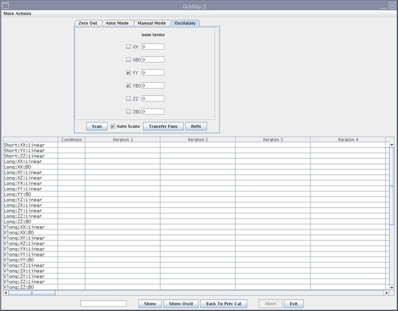

Operating Documentation
Direction 5440001-3, Rev# 6
Module Version 15.0, Version Date 12/17/09
Operating Documentation |
| ||||
| poison hazard | ||||
| the phantom contains cus04. do not ingest. | ||||
| dispose of as a hazardous waste according to state and federal regulations. |
| Condition | Reference | Effectivity |
|---|---|---|
DQA II Tool in spec. | - | - |
Shim per Installation & Calibration Wizard | - | - |
Unfold the 6-channel Grafidy Fixture and lock the arms into place (90° from center plate).
Connect the Hypertronics Cable to T/R Board and secure with screws. Place the fixture at the front (Head coil end) of the MR table with the connection box toward the bore. (See Illustration 1.)
Center the laser crosshairs on top of the fixture. (See the illustration below). Landmark the system and press Advance to Scan.
Start the Grafidy 3 tool.
Click on the Auto Mode tab. (See Illustration 3.) All three-coil axes will be selected. Click the [Scan] button to start the calibration.
Review the numeric output values from the Auto Mode scan. Verify that the results of the final iteration for each component are below specifications (green). See Illustration 4for assistance in reading output values.
If a component is not within specification after the maximum number of iterations, it may be necessary to use Manual mode to calibrate that component. If so, proceed to the next section.
Manual Mode allows you to iterate through the process and decide when to stop.
Select the Manual Mode tab shown in Illustration 5).
Select the desired terms, and press Scan.
If the Prompt To Accept mode is active, a graph of the results displays after the scan is completed.
If a good fit is displayed (fit line aligned with data line), click the [Accept] button. The calibration values will be saved to disk, and used in the next scan. Repeat this process by returning to Step 2.
If a bad fit is displayed, click [Cancel]. This will leave the last accepted values in the calibration files. Do not expect any improvement on future scans when the fit does not match the data, even if the Cal parameters are accepted.
The last iteration for any component must be a check only. Do not accept the fit parameters. You will not be allowed to exit immediately after updating the Cal parameters.
If problems are encountered or if it is out of specification after Auto Mode, it may be necessary to run Oscilatory mode. Proceed to the next section.
Select the Oscilatory tab. (See Illustration 7.)
Illustration 7: Grafidy 3 Screen - Oscilatory Tab

Select the applicable axis to perform Oscilatory mode compensation.
Select the [Transfer Func] button. Wait for scans to complete.
After the transfer function is complete, select the [Scan] button. A scan will be performed followed by a fit, and followed by another scan. (This process takes approximately 16 minutes.)
Remove Grafidy Fixture from the system.
Exit the Software Tool.